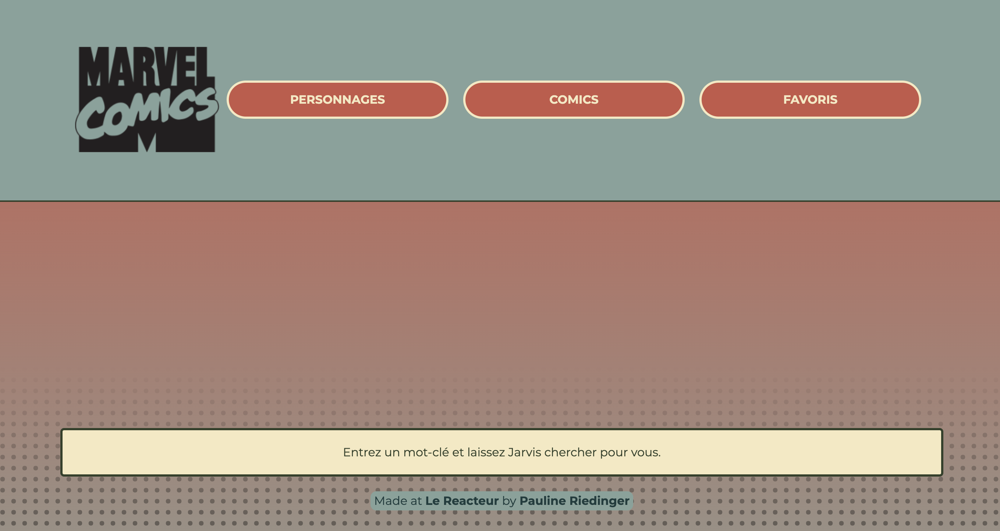
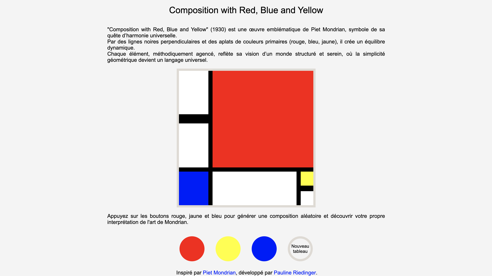

A propos de moi
Je m’appelle Pauline Riedinger, j’ai (très bientôt) 36 ans, et j’aime créer. Que ce soit en
construisant des univers dans un jeu vidéo, en assemblant patiemment
des briques de LEGO pour donner vie à une idée, en chassant des objets
uniques au hasard de mes chineries, ou en écrivant des lignes de code,
ce qui m’anime, c’est l’idée de donner vie à des projets.
Après une carrière dans l’administratif, j’ai choisi de me
lancer dans le développement web, un métier où la logique rencontre la
créativité. Ce changement de cap a été une aventure passionnante, et
je suis désormais prête à continuer à apprendre en alternance.
J’ai envie de collaborer avec une équipe, de découvrir les
rouages du monde professionnel dans ce domaine, et d’apporter ma
curiosité et mon énergie à vos projets.

Formation et compétences techniques
J'ai suivi un bootcamp de 10 semaines au Reacteur, en distanciel, où
j'ai acquis des compétences en HTML, CSS, JavaScript, MongoDB,
Express, Node.js, React, React Native, ainsi qu’en gestion de
version avec GitHub.
Ce programme intensif m’a permis de développer des
applications web, de travailler sur des projets concrets et
d’adopter une méthode de travail autonome.


Projets
Projet Full-Stack
ExcelsiorVerse

Ce projet a été réalisé à la fin de ma formation, après avoir complété les modules JavaScript, Backend, Intégration et React, et a permis de mettre en pratique l'ensemble de ces compétences dans un projet Full-Stack complet.
- React : création de pages dynamiques avec React Router, gestion d'état.
- API Marvel : intégration de l'API pour récupérer les données (personnages, comics).
- Pagination et Recherche : implémentation de la pagination et des filtres de recherche.
- Favoris : système de favoris avec stockage local (Cookies).
- Backend & Déploiement : hébergement backend sur NorthFlank, frontend sur Netlify.
- Design Responsive : création d'un site adaptatif et optimisé pour tous les appareils.
Projet HTML, CSS et JavaScript
Randomrian

Ce projet a été une occasion de fusionner ma passion pour l'art et mes compétences en développement, tout en explorant la manipulation des événements en JavaScript pour offrir une expérience interactive.
- Interaction Utilisateur : boutons ajoutant des couleurs aléatoires (rouge, jaune, bleu) à la grille, chaque clic génère une nouvelle composition artistique.
- Réinitialisation Facile : bouton "Nouveau tableau" pour remettre la grille à zéro (cases blanches) sans changer la structure.
- Structuration Précise : alignement rigoureux des éléments pour respecter l’esthétique géométrique de Mondrian.
- Design Responsive : interface adaptative pour tous les appareils.
Autres projets développés pendant le bootcamp au Reacteur
- Tripadvisor Web : projet Front-End (envoi automatisé de mails, carousel de photos)
- Deliveroo Web : projet Front-End (récupération de données, panier de commande)
- Vinted Web : projet Full-Stack (inscription / connexion, récupération de données, publication d'annonces, barre de recherche, paiement, upload de photos)
- Airbnb Mobile : projet Full-Stack (inscription / connexion, modification du profil utilisateur, affichage de cartes, géolocalisation, accès à la galerie d'images, accès à l'appareil photo)
Contact :
Si vous êtes prêt·e à offrir une chance à une personne motivée et en
début de parcours,
je serai heureuse de vous rencontrer pour en
discuter.